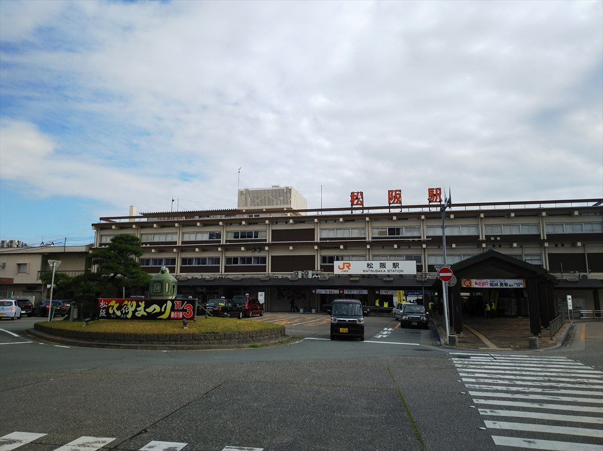
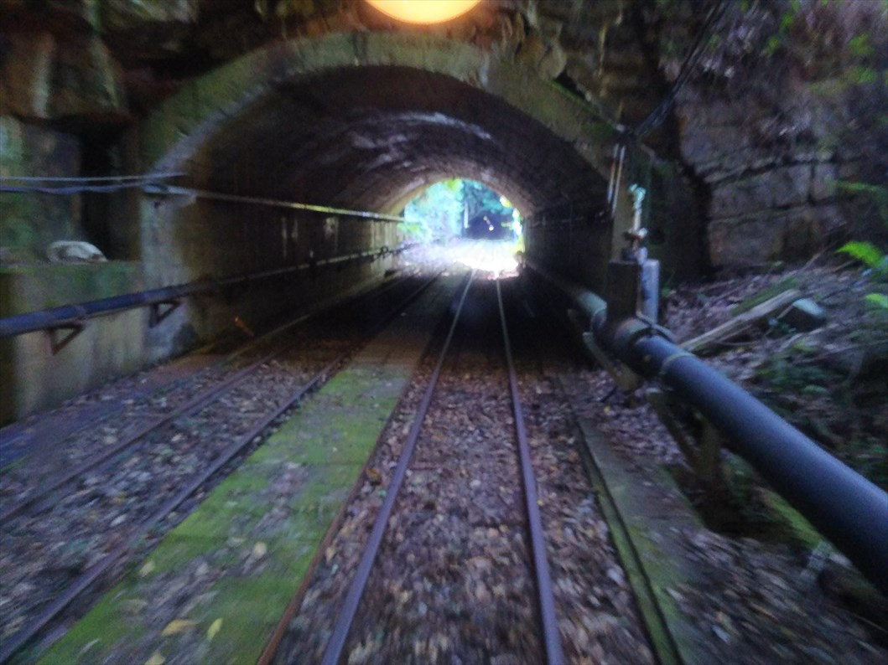
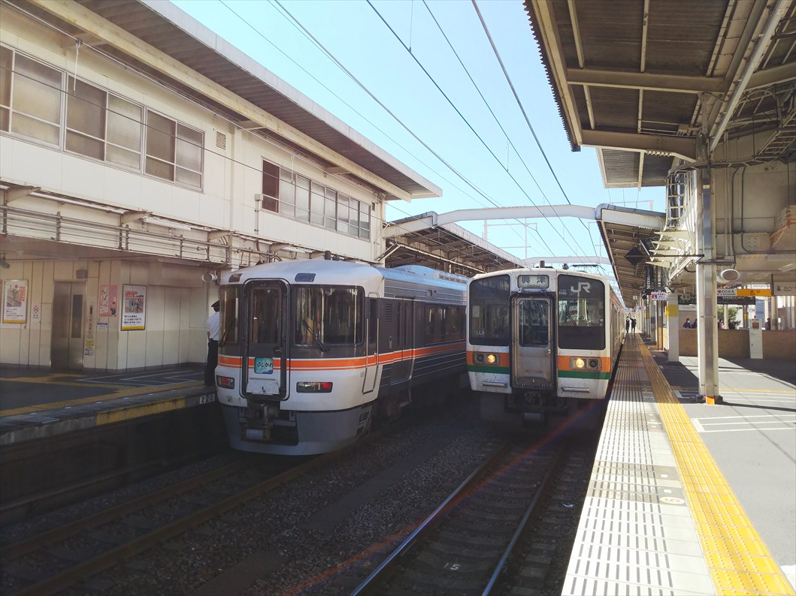
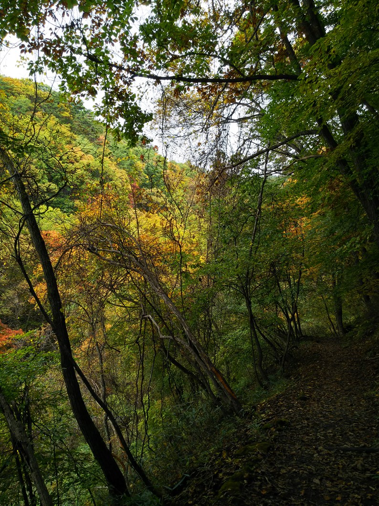

2022（R4） 10月15～17日 秋の温泉めぐり
例年ならとっくにリリースのある時期にも何もなかったので、とうとう無くなったのかと思われた秋の青春１８こと秋の乗り放題パス。
「鉄道開業１５０年記念」とうたいつつ、例年と何ら変わらない内容で今年も発売されたので、さっそく温泉めぐりに出かけました。
さて、ＪＲの乗り放題切符を買ったのに、やってき
たのは近鉄松阪駅。
目的地がかなり辺鄙なところにあるので、ＪＲでは
間に合わず、泣く泣く鶴橋から急行でやってきまし
た。

松阪は近鉄とＪＲが隣接していて、駅舎は共用です。
高校の頃、同じパターンで名松線に乗りに来たけど、
３０年たっても行動パターンが全然進歩してない・・
・
そしてもっと泣かなアカンのは、こっから先です。
ＪＲに乗るっちゅうのに、鈍行では間に合わず、特急に乗ります。乗り放
題っちゅーても、鈍行のみなんで、完全に持ち出しです・・・。
ちなみに列車に頭下げてんのは駅弁売りのお兄さんです。決して、私が「
南紀にあやまれ！」と言ってさせてるわけではありません。念のため。
紀伊長島駅で上下のすれ違いでしばらく停車したの
で、降りて撮影。
この特急南紀に使ってるキハ８５も、そろそろ引退
みたいです。
通常は２両で運行してるんですが、さすがに土曜な
んで３両に増結してました。
熊野市駅に到着。
増結車両のせいか、ヘッドマーク表示のところは空
白でした。ほんまええ加減やで、ＪＲ東海。
初めて降り立つ駅と思います。
それにしてもええ天気です。
さて、ここからバスに乗り込みます。
バスに５０分ほど揺られて、瀞峡近くにある瀞流荘
に到着。
こんな山奥でトロッコ？
そうなんです、ここからトロッコに乗って温泉に行
けるんです！
そして
ジャジャーン！
観光用のトロッコではなく、鉱山で使ってたトロッコなんです。
一度来てみたかったんすよ。
ちょうど折り返し列車が到着したところで、踏切も
ないところを普通に鉱山列車がやってきてビックリ
しました。
乗り場は普通の駅っぽいです。
駅舎っぽい建物もあります。
ここは本当に元鉱山列車の線路を使ってます。
近くの街には鉱山資料館もあって行きたかったんで
すけど、運悪く工事中で閉館してました。
街に続くトンネルは閉鎖されてました。
推進運転で温泉に向かうと思いきや、ちゃんと機回
して機関車を先頭に付け替えてました。
連結は手動でした。
乗客も少なく、運よく１両を一人で独占できました。
それにしても狭い。これに乗って鉱山の仕事に向かうって、テンショ
ン下がりまくりだったことでしょう。
いよいよ出発。
いきなりトンネルで、実はほとんどトンネル区間で
す。
しかし、すごい音と揺れです。
湯ノ口温泉駅に到着。
１０分もかからなかったですが、乗り心地は最悪で、
もう充分、って感じです。
歓迎してくれてます。
超シンプルな機関車ですが、マスコンは普通の電車
と同じですね。
鉱山側のトンネルも、封鎖されてます。
鉱山鉄道時代に来てみたかった～
そして、トロッコの駅からちょっと歩いたところに
ある湯ノ口温泉。
温泉の歴史は古いんですが、鉱山時代は枯れてたそ
うです。
閉山後、採掘したのが今の温泉です。
ちなみにトロッコ乗るだけなら５５０円なので、温
泉自体は銭湯より安いです。
トロッコ乗り場に戻ると、機回し終わってました。

引き返します。ちなみに路線はほとんど直線でした。
帰りは別路線のバスで戻ります。
途中にあった「入鹿」という地区。
入鹿って、歴史の教科書以外で初めて目にしたわ。
実は大化の改新で生き残った蘇我入鹿が生き延びて・・・とかいう
伝説でもありそっすね。
阿田和駅近くのバス停で下車します。
目の前が七里御浜です。

阿田和駅。もちろん無人駅。
鈍行で戻ります。ようやく秋の乗り放題パスが使える！
亀山駅に到着。ＪＲ西と東海の境ですね。
昔と変わってないと思ったら、駅前は駅舎はそのま
まで屋根がかかってました。
さて、前日は桑名に泊まって、先を目指します。橋
上駅舎が完成してますね。
実は名古屋までは近鉄よりＪＲのほうが安いという
意外な事実が。でも客は圧倒的に近鉄のほうが多か
ったです。
線路をまたぐ通路からは、北勢線の西桑名駅が見え
ます！（列車が停まってないのでわかりにくいです
が、左のほうです。）これはいい眺めですね。
ナロー、狭軌、標準軌と３つが揃う珍しい駅やねん
から、もっとアピールすればええのにと思ってしま
います。
で、全国旅行支援事業の真っただ中、三重県のみで使えるクーポン頂
いたのですが、コンビニで使えないので使えるとこがない！しょうが
ないので三岐鉄道グッズを息子の土産に購入しました。少しは経営の
足しになったやろ。
名古屋駅にて。令和の風景ですね。

静岡に到着。これは平成の風景ですね。
ちなみに秋の乗り放題パスが青春１８より優れてる
点が自動改札を通れること。途中の大きい駅で途中
下車するときは有人改札が混んでて時間がないとき
はイラつくんですが、それが無いのは助かります。
さて、今回も昼は駅そばといたします。今回は静岡
駅でうどんをいただきました。
しかし注文しても反応なく無言でうどんを出された
けど、なんでそんなに不愛想なんや・・・
さて、東海道を富士まで東上して、ここからは身延
線の旅となります。
この車両、昔のボックスシートみたいで、ＪＲ東海の中では好きな車
両です。
身延線は富士川の水運に取って代わって出来た鉄道
なので、富士川沿いを進んでいきます。
下部温泉駅に到着。
そうです、この旅２湯目は下部温泉です。

昔はにぎわったのか、駅前にもお土産屋さんが健在
です。
さて、やって来ました。ここが本日の宿、信玄のか
くし湯、源泉館です。
（手前ではなく、奥のほうです）
かなり古い建物っすね。
若山牧水や田山花袋も泊まったみたいです。
中も、値段にしてはかなりボロ目でした。全国旅行支援があって安く
なってるからええけど、通常の値段ではちょっと・・・ぐらいの感じ。
湯舟自噴の「大岩風呂」というので期待してたのですが、ほとんど板
敷でした。
こんな感じ
混浴やけど、珍しく、タオルで隠せという風呂でした。
端にある岩の部分は、常連のジジババがたむろってて、すきをうかが
ってようやくそこに行ける感じです。
しかし寒い！湯温は３０℃と書いてたけど、そんなにないで。２０分
浸かって、そばにある４０℃ぐらいの通常の温泉に５分浸かる、を繰
り返せということやけど、寒くて２０分もよー我慢出来んわ。
夕食が部屋食やったのはよかった良かったんですが、箸が使い捨ての
プラッチック製。そんなん初めて遭遇したわ。ＳＤＧｓの世のおもく
そ逆行しとるがな。
近所を散策。平日ということもあり、人の気配が全然なかったです。
店もほとんど閉まってる。というか、廃業か。


さて、翌日、最後の温泉に向かいます。
身延線を北上して、南甲府駅に到着。
身延線は、元々国鉄ではなく、身延鉄道という私鉄
が発祥で、その鉄道の本社があったのが、ここ南甲
府駅となります。
なので、本社兼駅舎の建物はなかなか立派です。
甲府駅に到着。
平日の宿泊扱いで、山梨限定クーポンを３０００円
分ももらえたので、待ち時間で土産や日用品を買っ
て使い果たしました。
ここからは中央本線に乗り換えです。
茅野駅に到着。
ラッキーなことにクロスシート車にあたり、茅野ま
で快適な旅でした。
茅野駅前にはＣ１２が。中央線にこんな小型機走っ
てたっけ？
そしてここからバスで温泉に向かいます。
プール平に到着。けったいな地名ですね。
さすが信州、もう紅葉が始まってました。

歩いて１５分ほどの所に滝があるというので行ってみることに。
結構本格的な山道です。
いや～、紅葉と滝、癒されますね。
温泉は、残念ながら建て替えられてて雰囲気はいま
いちでしたけど、いい湯でした。
ほな、鈍行乗って中央西線経由で帰るとするか。
ちなみに金山からの米原行は、身延線で遭遇した固
定のボックスシート車にあたりました。そんなん初
めてですわ。